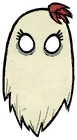

Inspiração
Don't Starve é um jogo eletrônico de ação-aventura com elementos de sobrevivência e roguelike desenvolvido e publicado pela Klei Entertainment. O jogo foi inicialmente lançado através do software Steam da Valve Corporation para Microsoft Windows, Linux e OS X no dia 23 de abril de 2013. No ano seguinte, o jogo foi portado para o PlayStation 4 com o nome de Don't Starve: Giant Edition. Posteriormente, essa versão seria ainda adaptada para o PlayStation Vita e PlayStation 3, em setembro de 2014 e junho de 2015, respectivamente; além de uma versão para Wii U em março e para Xbox One em agosto do mesmo ano. Já a versão para iOS, renomeada Don't Starve: Pocket Edition, foi lançada em 9 de julho de 2015. Por fim, um conteúdo adicional para download, intitulado Reign of Giants, foi lançado em abril de 2014 e a expansão multijogador, chamada Don't Starve Together, foi lançada gratuitamente para todos os jogadores em 3 de junho de 2015. O jogo conta a história de um cientista chamado Wilson, que se vê num mundo escuro e sombrio e precisa sobreviver o máximo que conseguir. Para isso, o jogador deve manter Wilson saudável, bem alimentado e mentalmente estável, evitando os inimigos sobrenaturais e surreais que tentam atacá-lo e devorá-lo. O modo "Aventura" acrescenta uma certa profundidade ao enredo, antagonizando Wilson contra um vilão chamado Maxwell. Don't Starve foi o primeiro jogo da Klei do gênero sobrevivência. O jogo foi influenciado por Minecraft, que iniciou a popularização desse conceito, e também pelo cineasta Tim Burton. A crítica especializada recebeu bem o jogo, elogiando seu estilo de arte original, sua música e sua variabilidade de mortes do jogador, sendo que os principais defeitos apontados resumiram-se na dificuldade do jogo e a implementação de morte permanente. Jogabilidade Don't Starve é um jogo do gênero de ação e aventura, com elementos de jogos de sobrevivência e roguelike. As interações com elementos do jogo e o combate ocorrem com o teclado, enquanto outras atividades, como a criação de itens, podem ser manipuladas pelo mouse. Os controles são adaptados dependendo do sistema que o jogador está utilizando. O objetivo do jogo é sobreviver o maior tempo possível, sendo contadas pelo número de dias fictícios do jogo, equivalentes a oito minutos no mundo real. No jogo, há barras de vida, de fome, e de sanidade. Caso algum desses medidores cair para zero, o personagem do jogador ("Wilson") morre, e o progresso do jogador é perdido, como em outros jogos do tipo roguelike. A exceção é caso o jogador tenha algum item específico que previna sua morte - Meat Effigy, Touch Stone, ou Life Giving Amulet. O jogo conta com um sistema de dia e noite que impacta o ambiente ao redor do jogador e a jogabilidade. Enquanto que durante o dia o jogador está mais seguro, podendo coletar recursos como troncos de uma árvore ou coletar carnes de coelhos, durante a noite o jogador é ameaçado por vários inimigos, principalmente caso não esteja perto de uma fonte de luz.
Don't Starve Together
Em Maio de 2014, a Klei Entertainment anunciou Don't Starve Together, uma expansão para permitir jogos multijogador. Inicialmente, o jogo era para ser apenas para um jogador, mas a empresa retificou em seu fórum de discussão que jogos multijogadores eram uma demanda popular da comunidade. Essa versão do jogo foi lançada oficialmente em 21 de Abril de 2016.

Referencias
Link sobre a historia
Link Sobre fotos e algumas informações sobre o jogo